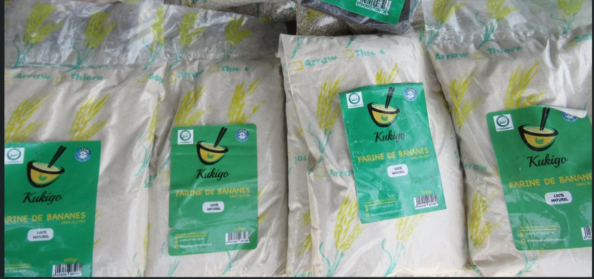
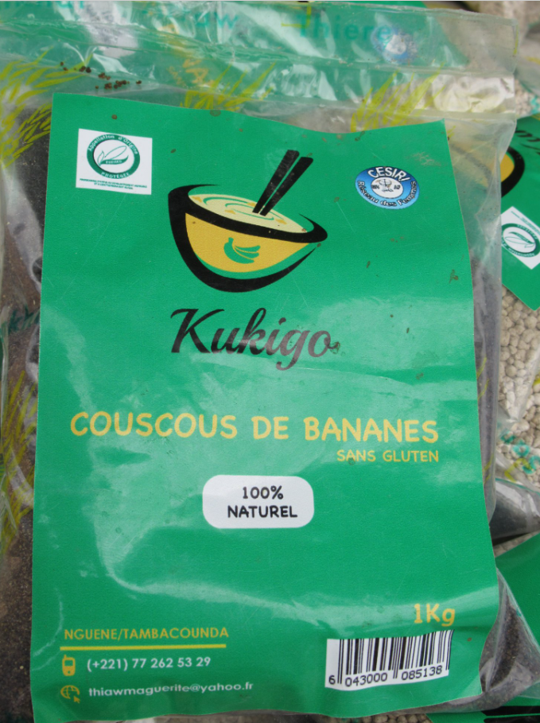
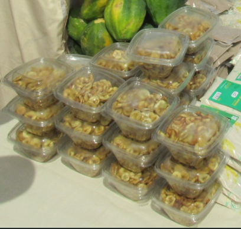

Farine de banane
Idéale pour la cuisine, la pâtisserie et les bouillies.
Naturel • Transformation locale • Sénégal
Kukigo valorise des ingrédients simples comme la banane, la patate douce et d’autres plantes locales pour créer des produits du quotidien, naturels et accessibles. Nos produits alimentaires sont sans gluten.
Vente actuelle : Sénégal • Produits alimentaires sans gluten


Kukigo — Des produits naturels issus des ressources locales.
Kukigo est une initiative sénégalaise spécialisée dans la transformation de plantes, fruits et légumes locaux comme la banane et la patate douce, afin de créer des produits naturels pour le quotidien.
À travers cette démarche, Kukigo valorise les ressources locales et le savoir-faire artisanal pour proposer des produits simples, utiles et accessibles, destinés aussi bien à l’alimentation qu’à l’hygiène.
Les produits Kukigo sont élaborés avec soin dans le respect des méthodes traditionnelles. Plusieurs produits alimentaires sont notamment sans gluten, permettant de proposer des alternatives naturelles adaptées à une alimentation plus saine.
Kukigo signifie « mon enfant » en sérère-laalaa. Ce nom reflète l’origine profonde du projet : une initiative née de l’attention portée à un enfant et à son alimentation.
L’histoire de Kukigo commence en 2002 avec Marguerite THIAW. À cette période, confrontée à des moyens financiers limités, elle cherche une solution simple et naturelle pour nourrir sainement sa fille alors âgée de 6 mois.
« Est-ce que je ne pourrais pas éplucher des bananes et les faire sécher pour obtenir de la farine ? »
C’est à partir de cette idée qu’elle commence à transformer la banane en farine, en l’épluchant puis en la faisant sécher. Elle utilise ensuite cette farine pour préparer des repas qu’elle mélange avec du lait et un peu de sucre.
Les résultats sont rapidement visibles : sa fille grandit en bonne santé et se développe bien. Encouragée par cette expérience, Marguerite THIAW décide alors de partager son savoir-faire avec les femmes de son village ainsi qu’avec celles des zones productrices de bananes.


Au fil du temps, Marguerite THIAW renforce ses compétences dans la transformation des produits locaux et crée une association de femmes productrices de bananes. L’objectif est d’aider les femmes de la région à mieux valoriser cette ressource, au-delà de la simple vente du fruit brut.
Progressivement, de nouveaux produits voient le jour : farine de banane, couscous de banane, chips de banane, savon de banane et d’autres produits naturels. Ces créations sont notamment présentées à la Foire de Dakar, permettant de faire connaître cette initiative à un public plus large.
Aujourd’hui, Kukigo poursuit cette démarche en valorisant les ressources naturelles locales afin de proposer des produits simples, naturels et accessibles pour le quotidien.
L’initiative portée par Marguerite THIAW autour de la transformation de la banane et de la valorisation des produits locaux a également été mise en avant par des médias et organisations internationales.
Produits naturels à base de banane, patate et autres plantes locales.
Une gamme naturelle pour l’alimentation, les préparations traditionnelles et l’hygiène du quotidien.

Idéale pour la cuisine, la pâtisserie et les bouillies.

Savon artisanal naturel pour l’hygiène du quotidien.

Préparation traditionnelle issue de la transformation de la banane.

Alternative naturelle aux couscous traditionnels.

Préparation traditionnelle naturelle.

Préparation traditionnelle issue de la banane.

Snack naturel et croustillant.

Utilisation possible pour diverses préparations.
Des produits simples, naturels et adaptés aux préparations du quotidien.

Adaptée à la cuisine et à la pâtisserie.

Préparation traditionnelle à base de patate.
Remarque : Tous les produits alimentaires de Kukigo sont sans gluten.
Un aperçu des produits, de l’atelier et de l’univers Kukigo.


Pour commander au Sénégal ou obtenir des informations, contactez Kukigo par téléphone ou WhatsApp.